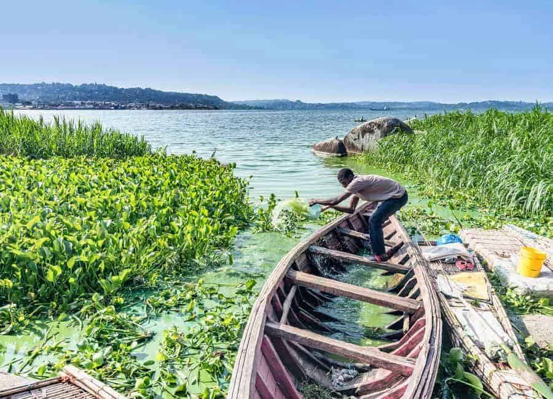

The Ssese Islands feel like Uganda stepping into a different register. Ferries replace long overland drives. Palms and broad lake
horizons replace traffic and tight schedules. The air carries that slightly softened quality that only comes from being near a huge
body of water.
What many travelers enjoy most is the immediate drop in pressure. Time seems to spread out on the islands. Afternoons become longer.
Shorelines invite wandering rather than rushing. Even simple activities like sitting with a view or watching boats move across Lake
Victoria begin to feel like proper parts of the trip rather than gaps between attractions.
That is the Ssese appeal in a sentence: it restores the traveler. Uganda has many high-energy highlights, and the islands offer a
beautifully judged counterpoint.
Why The Journey There Matters
Part of the charm lies in the approach. Reaching an island by water always changes the psychology of travel. The ferry itself becomes
a transition from one tempo to another, and by the time the shoreline comes into view, you already feel that the trip has shifted.
That separation is important. It helps the islands feel like a true getaway rather than simply a different stop on the same road.
Travelers often arrive carrying the pace of the mainland and leave a day later sounding more relaxed without quite realizing why.
Beaches, Forest, And Lake Light
The islands are not tropical in a glossy brochure sense alone. Their beauty is more grounded: sandy stretches, forest pockets, wide
water, changing weather, and a horizon that never quite stops drawing the eye. Sunset tends to do excellent work here, turning the
lake bronze and softening every edge.
The visual simplicity is part of the pleasure. After destinations filled with movement and detail, the Ssese Islands feel spacious
and uncluttered, as though they are giving your attention room to recover.
What To Do On The Islands
The best answer is often "less than you think." Swim, walk, take a boat trip, read, watch the weather shift over the lake, or spend
an evening outdoors listening to the water and the insects take over the soundscape. The islands reward receptiveness more than busy planning.
That said, they can also work well for couples, small groups, and travelers who want a lakeside base before or after a broader Uganda
circuit. They are flexible in that gentle, restorative way that very few destinations manage.
Why The Ssese Islands Stay Underrated
Many visitors come to Uganda thinking primarily about wildlife or adventure, which means the islands are sometimes treated as optional.
In reality, they can be the perfect finishing note: a place where the journey settles, the body slows, and the memories begin to
arrange themselves.
For travelers who want a trip with both excitement and release, the Ssese Islands are not an extra. They are one of Uganda's most
attractive ways to give the whole itinerary a more graceful ending.